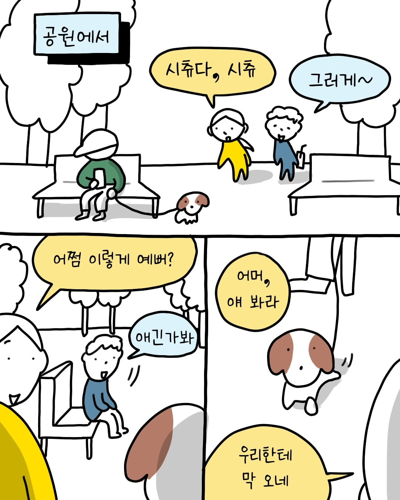
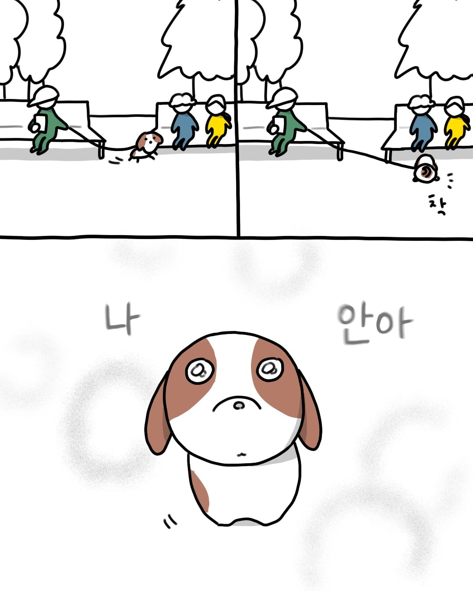
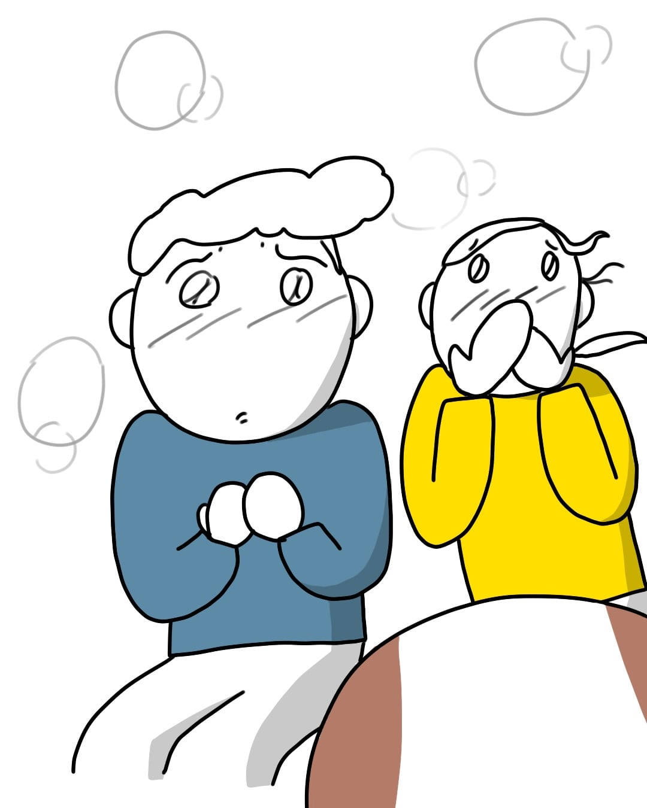
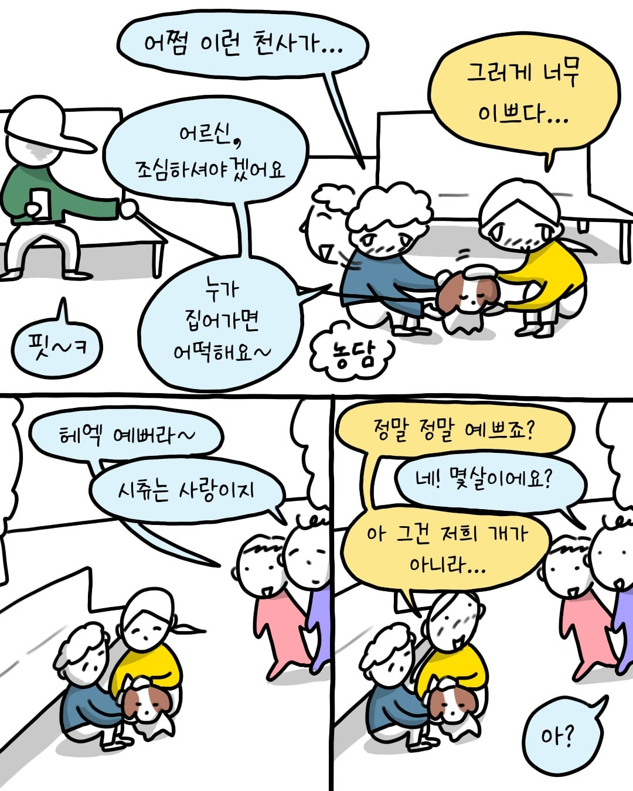
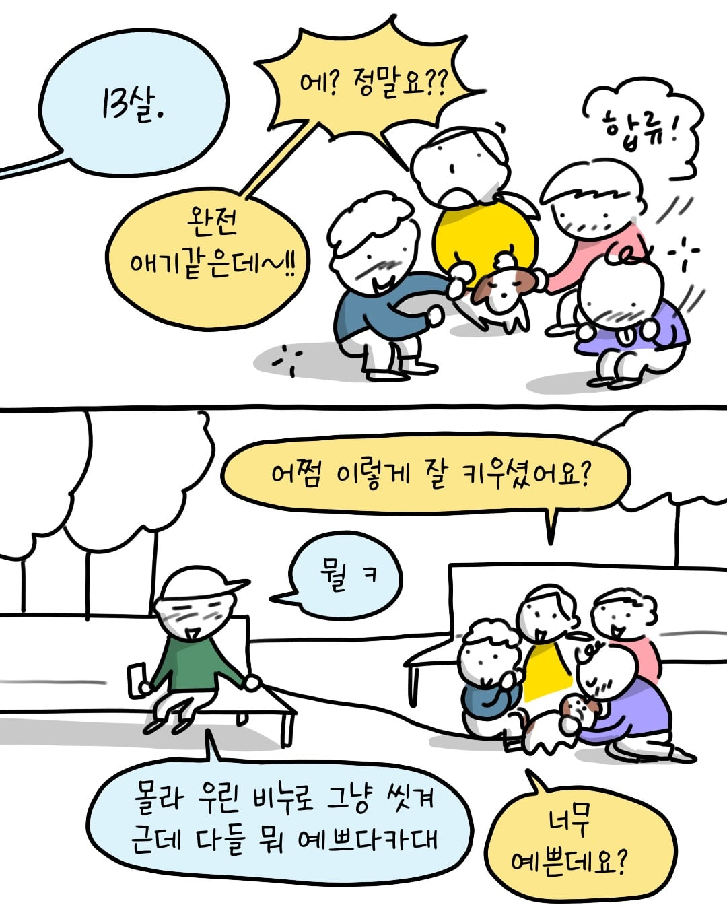
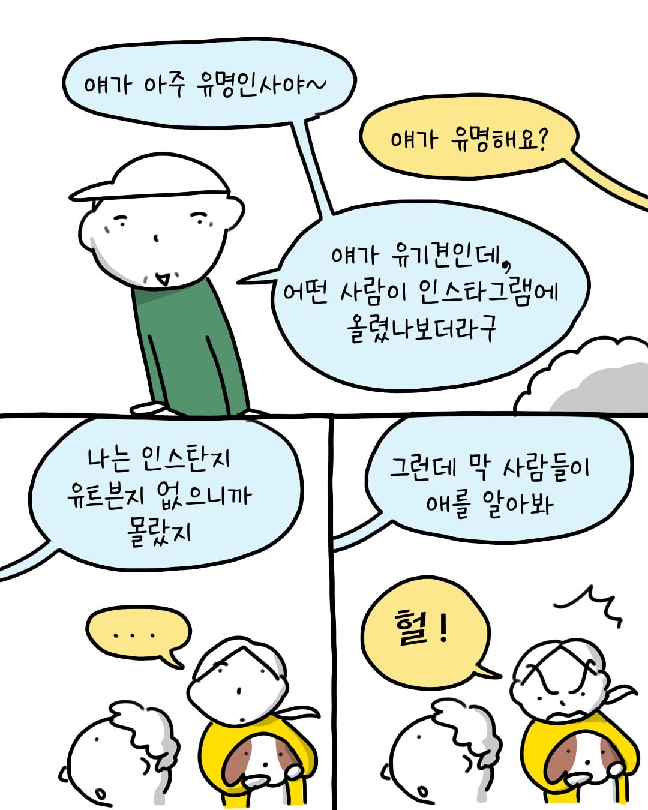
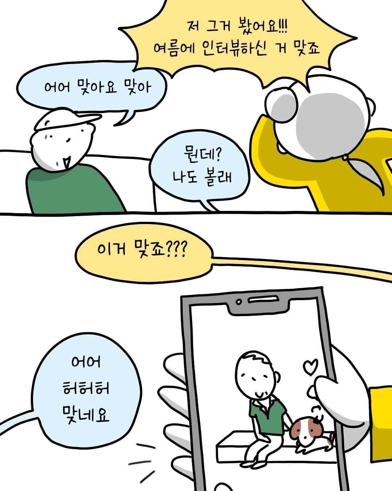
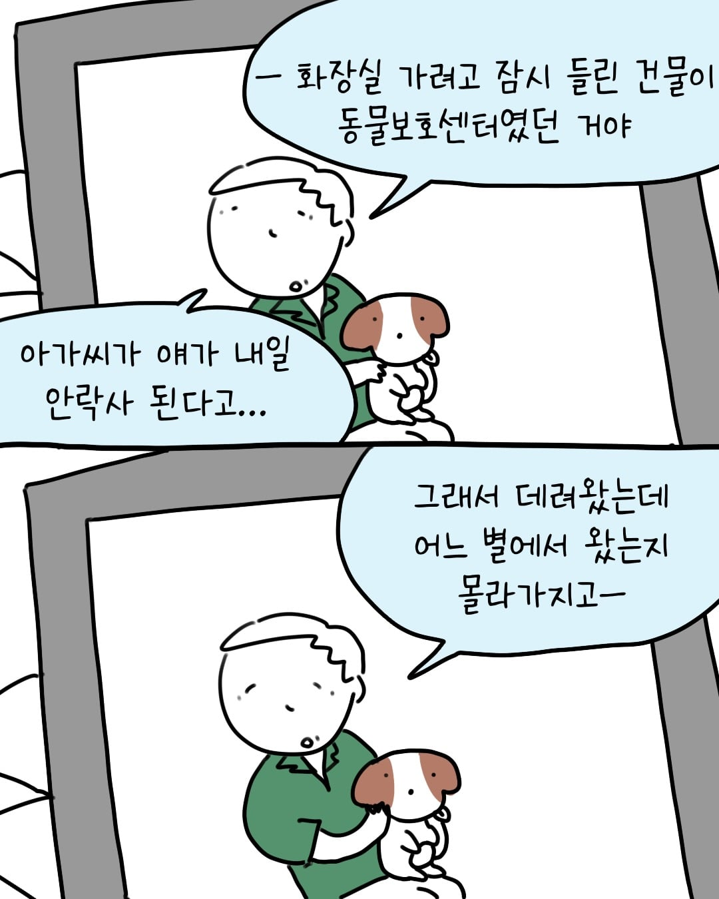
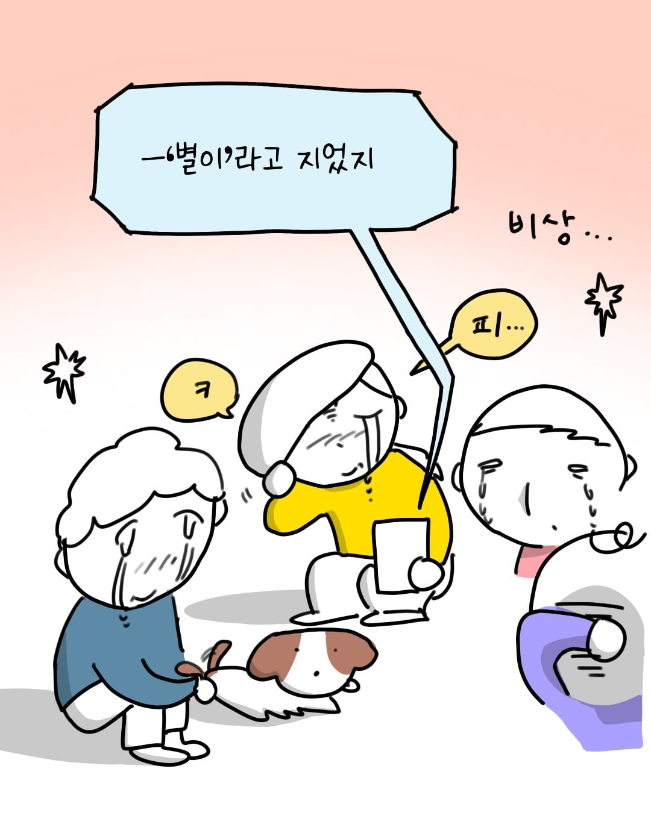
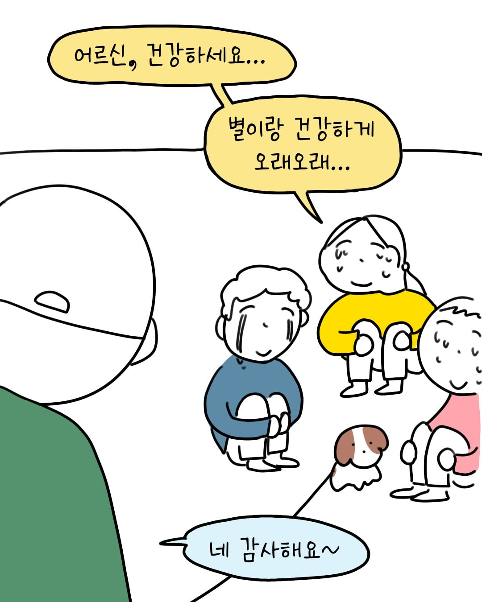
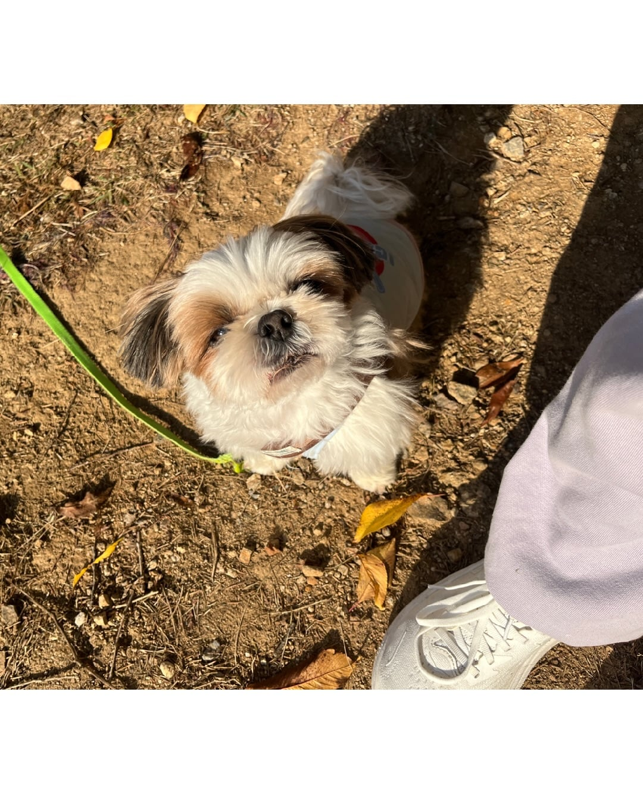
일요일 아침 부터 나만 울 수 없지..











일요일 아침 부터 나만 울 수 없지..
댓글
수집 당시 댓글 28개
빈유만세 · 6 시간 전
따뜻한그란돈 · 5 시간 전
수톤이 · 5 시간 전
올초에 길에서 주워온 새끼 아직도 주인을 못찾았다
유기는 아니고 가출견인듯 아 털 너무빠져 ㅠ
· 핑크타릭 · 4 시간 전
?? : 키워라 개붕
· 전복 · 4 시간 전
흩날려라 천털앵
랭9 · 5 시간 전
별이와 함께 쭈욱 행복하셨으면 좋겠다
까치산 · 5 시간 전
어르신 핏~ㅋ 하고웃는거 얼탱이없네 ㅋㅋ
아니이개외안되 · 4 시간 전
개는 진짜 주인닮는다고 아저씨처럼 편안해 보인다
HuntingSoul · 4 시간 전
다른 강아지들 다 이쁘긴 하지만
시츄가 유독 내 눈에는 더 이쁜것같음
바보담비야 멍멍이 별에서 행복하게 지내
김공장 · 4 시간 전
아ㅅㅂ 일요일 아침부터 눈물이..
인테리어사기꾼 · 4 시간 전
저 정도면 운명 아니냐? 화장실 가려고 갔다가 별이를 업어오다니...
끼룩끼룩이 · 4 시간 전
좀따 봐야겠다 혼자 울어야지
번쩍필살검무 · 4 시간 전
시추는 천사야
수박은맛있어 · 4 시간 전
인연이란게 참 찬란해
나는햄뽂아요 · 4 시간 전
Kia · 4 시간 전
잠시만요 · 4 시간 전
진짜 어른이시네..
인천이천안보다좋다 · 4 시간 전
별로 안감동적인데?
· 인천이천안보다좋다 · 4 시간 전
· sitiydu · 2 시간 전
우리 갸붕이는 거짓말 잘 못하노
· 4829571 · 3 시간 전
너는 별로 가라~
옛계정은어디갔나몰라 · 4 시간 전
낭만이 넘치누
브리스코 · 4 시간 전
하하하...나는 감정이 없는....끄읔
싸이코패스라서. .. 크으읔
웃음도 안나고 눈물만 나네 흐엉헝헣...
· 노들나루 · 3 시간 전
간단한닉네임 · 4 시간 전
다행이다 ㅠㅠ
인생두방 · 3 시간 전
크윽 나는 사이코패스다 사이코패스다... 흐흑 흐흑
칵퉤 · 3 시간 전
아버님 : 이게 인자... 유기견... 이래가지고...
ㅁㅁ : 아니 이름이 뭐냐구요
쥐드립넷 · 3 시간 전
따뜻하시다